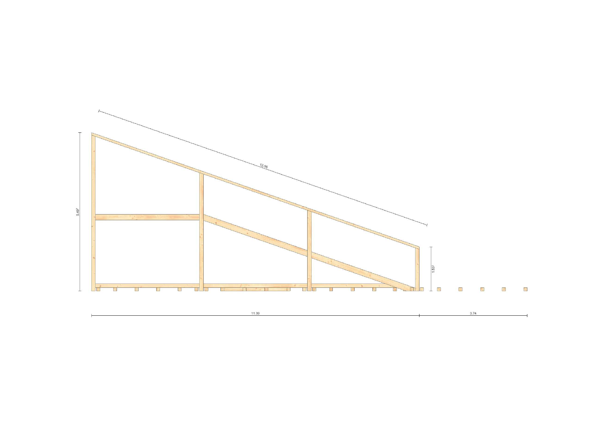
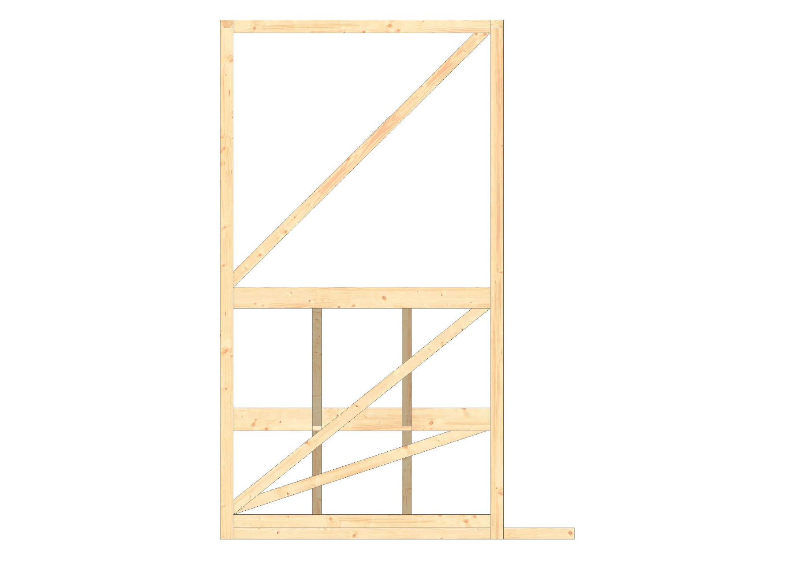
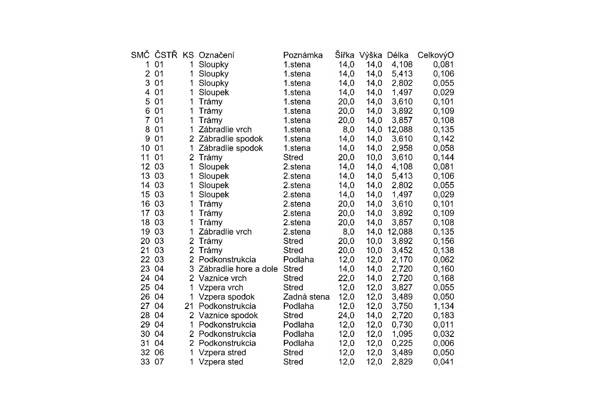

← Všetky projekty
Realizačná dokumentácia
Altánok a mobiliár Vlčiareň
Ukážka spracovania drevenej konštrukcie altánku v lokalite Vlčiareň pri Smoleniciach.

Rozsah ukážky
Konštrukcia rozkreslená do prvkov.
Výber z dokumentácie drevenej konštrukcie: axonometrické zobrazenie zostavy, kótované pohľady, čelné rámy a výkaz prvkov.
Projekt uvádza na Archinfo architektov Ing. Roberta Provazníka, PhD. a Emu Ruhigovú. Táto stránka predstavuje ukážku výkresového spracovania projektu.
Výkresy
Technická dokumentácia



Zdroj projektu a údaje o autoroch návrhu: Archinfo.sk ↗.
Máte podobný projekt?
Pošlite podklady a dohodneme rozsah realizačných výkresov.